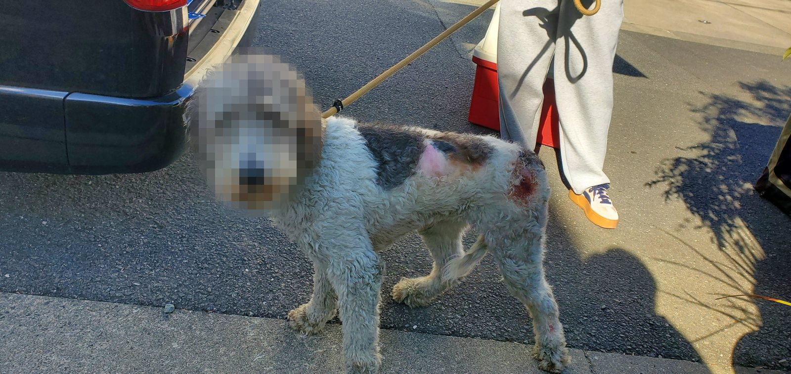
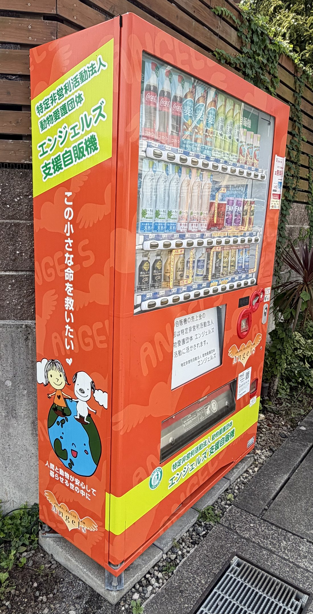
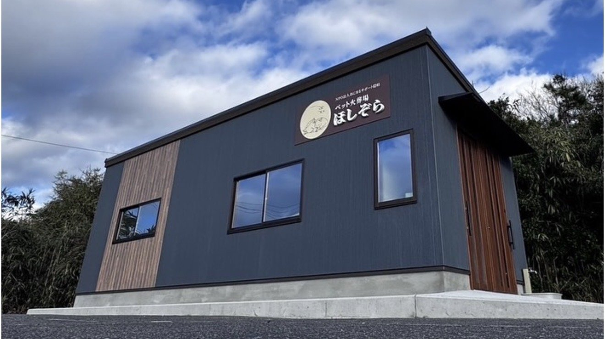
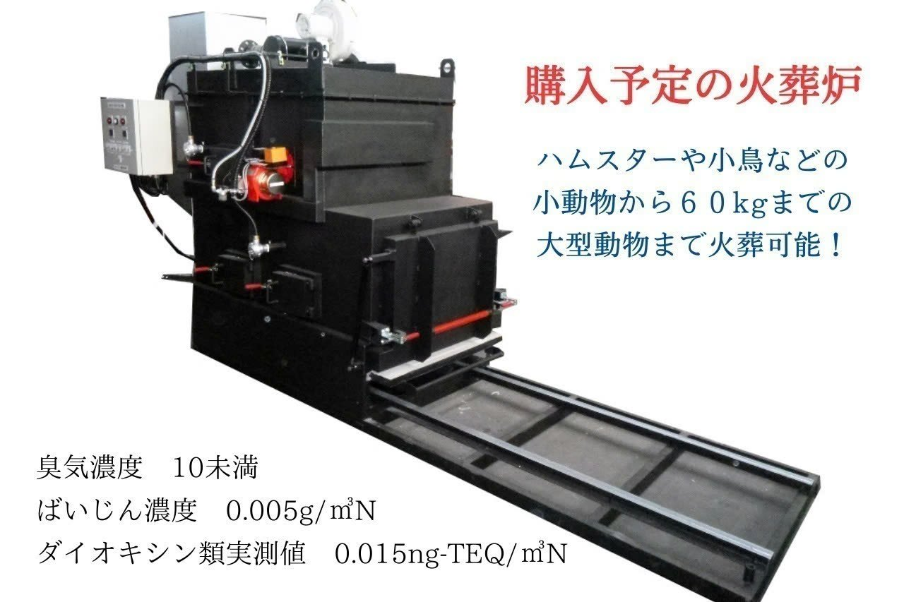
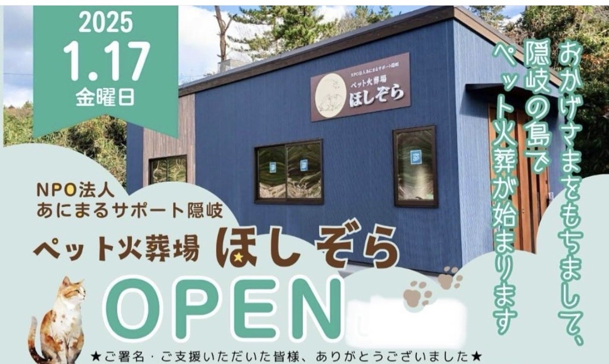
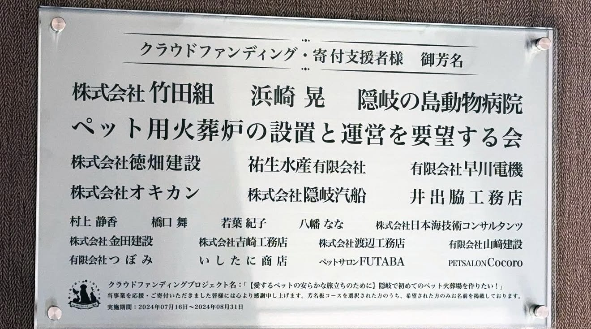
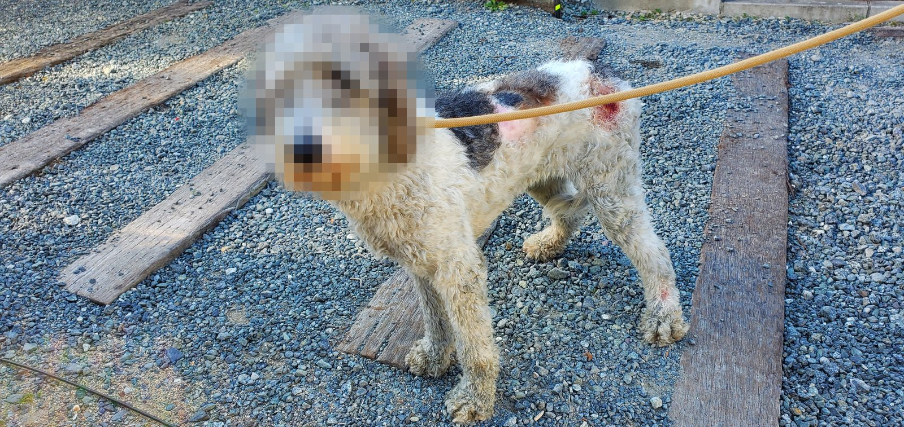
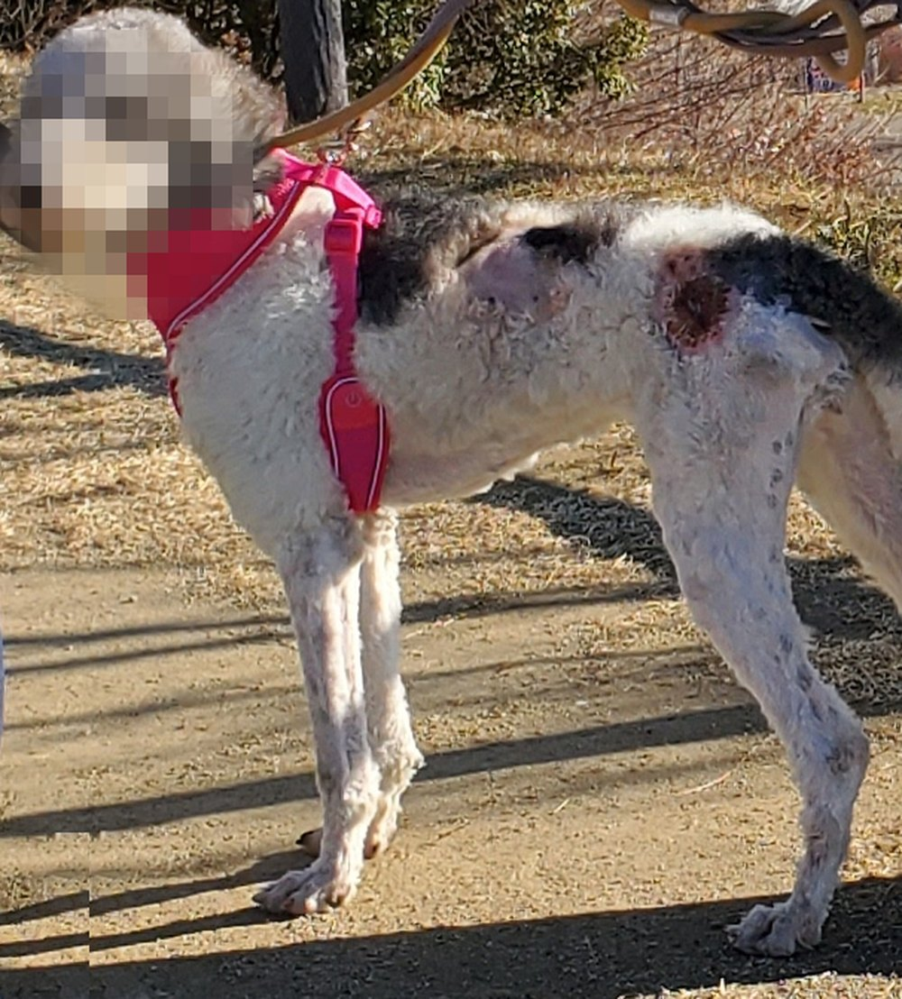
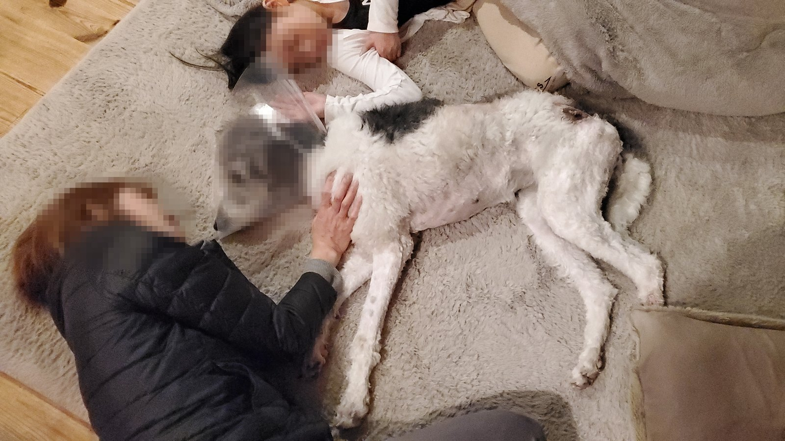

社会活動
はじまりは、行き場を失った一匹の犬を家に迎えたことでした。紋章に描いた犬は、その原点です。2010年から続く保護犬の活動、2013年から続く寄付の仕組み、そして離島のペット火葬場づくりへの支援をご紹介します。

行き場のない命を、家族として迎える
2010年から、行き場を失った犬を家族として迎え入れることを続けています。
写真は、保護した日の姿です。毛は絡まり、皮膚のあちこちに傷があり、痩せていました。それでも人の顔をまっすぐ見る目に、迎えると決めました。
「引き受けたら最後まで」。犬に対して続けてきたこの姿勢は、いまの訪問マッサージの仕事にそのまま続いています。
自分の手が届かない命にも、続けられる形で
一頭ずつ迎えるだけでは救えない数があります。2013年、寄付型自動販売機を設置し、売上の一部を犬と猫の殺処分ゼロを目指す動物愛護団体へ継続的に寄付する仕組みをつくりました。
飲み物を1本買っていただくことが、そのまま支援になります。スーパーの方が安いと分かっていながら、わざわざ車を停めて買ってくださる方が、長年たくさんいらっしゃいます。この活動を支えているのは、そうした一人ひとりです。
近所の子どもたちが小銭を握って買いに来ることもあります。動物の問題を知るきっかけになれば、それも役目の一つ。小さな子どもから大人まで、身構えずに、手軽にできる小さな寄付として、支援の輪を広げています。

離島のペット火葬場づくりを支援
島根県・隠岐の島にはペットの火葬施設がなく、亡くなった動物はごみ処理場に持ち込むしかありませんでした。その状況を変えようと、NPO法人あにまるサポート隠岐が「島で初めてのペット火葬場をつくる」クラウドファンディングを立ち上げ、288人の支援で目標に迫る資金が集まりました。
私たちもこの取り組みに寄付し、2025年1月に開所した火葬施設「ほしぞら」の芳名板に、支援者の一人として名を連ねています。最期まで家族として見送れる場所が、離島にもあってほしいと考えたからです。




写真提供：NPO法人あにまるサポート隠岐
活動の記録


